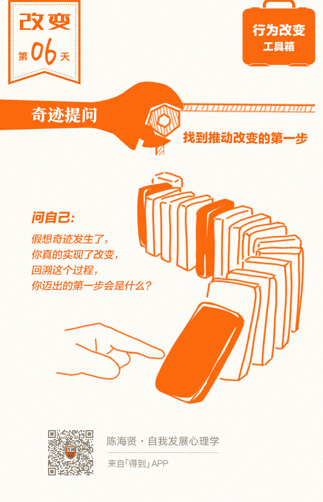

06丨小步子原理：如何走出改变的第一步？

欢迎来到《自我发展心理学》。
你好，我是陈海贤。
这一讲，我们继续来讲改变的方法。
还记得那个大象和骑象人的比喻吗？大象就像是我们的情感，骑象人就像是我们的理智。
通常我们所说的改变，是骑象人指挥大象，去他想要去的地方。但是，很多时候，大象也会劝说骑象人，让他相信，改变既没有必要，也没有可能。
也就是说，我们的情感也会诱导理智，让我们停留在自己的心理舒适区，无法做出改变。
那么，有没有办法克服这种阻力，让大象顺利迈开步伐呢？
这节课，我想教你一个能够有效推动改变的方法。这也是行为改变的第二个原则——小步子原理。
奇迹提问：迈开第一步
“小步子原理”，简单来说，就是在改变的路上迈出小小的一步，获得一个小小的成功。让每一次的小成功，成为下一次改变的基础。
小成功能够让大象体会到改变的好处，也会塑造一种希望感，让大象相信改变是可能的，并促使大象不断迈开步伐。
可问题是，成功总是在行动之后。我们要先有行动，才可能获得好结果。怎么才能让大象迈开第一步呢？今天我们介绍一种方法，叫“奇迹提问”。
什么是“奇迹提问”呢？让我用一个故事来说明。
我有个来访者，已经大四了，他需要在最后一学期修完4门课才能毕业，否则的话，就会被退学。可就在这个关键的时候，他却每天窝在宿舍打网游，几乎不出门。
他是村里第一个名牌大学生，村里人劝自己孩子好好读书的时候，都会以他为榜样。
他家里并不富裕，他很清楚自己顺利毕业参加工作对这个家庭的意义。可是，就是因为这种压力，让他提不起精神好好看书备考了。
谈到马上要到来的考试时，他说他已经想明白了，毕不毕业也无所谓，毕不了业大不了去干体力活，有口饭吃就行。
你知道他这么说的时候，当然并不是真的无所谓，而是大象畏惧压力，迈不开步伐，逐渐对改变失去信心了。
有一天我就问他：“假如奇迹出现了，你真的顺利毕业了。会发生什么呢？”
他摇摇头，说不想去想这些没意义的事。
请你注意，不去想可能的改变，这也是大象保护自己的方式，是防止自己失望。
可我坚持说：“没关系，只是想想嘛。”
他慢慢开始想了，说可能会去家乡的省会城市找个工作，如果找不到，就回高中母校当老师，毕竟高中解题的技巧还在。
说到这里，他脸上就开始有光了，也许是回想起了在高中当学霸的时光。
我就继续问：“好啊，现在来想一想，如果你已经顺利毕业了，你真的做到了。回顾这个过程，你迈出的第一步是什么？”
他想了想说：“那我至少要让自己的作息正常起来，要按时去食堂吃饭吧。”
我说：“好，那你能做到吗？”
“奇迹提问”是心理治疗里经常会用到的一个提问句式。它看起来简单，其实有着精巧的设计。
在改变的过程中，你往前看和往回看，所看到的东西经常会不一样。
往前看，你会看到困难；往回看，你会看到方法和路径。
当你假设好的结果已经发生了，再往回看的时候，你其实已经绕开了大象的防御机制。
大象不会再去思考这件事是怎么不可能，它的困难在哪里，而只会思考这个过程是怎么发生的。这时候，你会更清楚，大象的第一步该怎么走。
在这个咨询里，我们没有讨论怎么去学习，怎么通过考试，这些任务都会吓坏大象，让大象不敢迈出步伐。
我们所讨论的，仅仅是按时去食堂吃饭。这是来访者能做的事，也是他有信心做的事。
所以，“奇迹提问”带来了改变的第一小步。这样的改变虽然微小，但对来访者却是非常有帮助的。
我给来访者做过心理免疫的X光片，知道他之所以每天呆在寝室，不去教室，不去图书馆，是怕碰到熟人，怕别人问起，他会不知道怎么办。
每天按时去食堂吃饭，就是针对他心理免疫系统的小小的一步。
他真的去做了。最开始小心翼翼地，生怕被别人看到。
第二天打饭的时候，还真遇到一个同学，那个同学很热心，问起了他的情况，他犹豫了一下，就说了。
也许是出于好意，那个同学就跟他说：“我现在在考GRE，也很孤独，我很需要一个人提醒我早起。这样，我们相互提醒，一起约吃早饭怎么样？”
他答应了。后来，他们就开始一起上自习，他的状态慢慢好了起来。
所以，有时候改变就是这样，它像是一副多米诺骨牌。最重要的是找到能够推动改变的那块牌，找到第一个小小的改变，并把它推倒。
用“奇迹提问”的方法，找到第一个小小的改变，并让它实现，这种策略就叫做“小步子原理”。
记住，改变的时候，千万不要试图去和你心中的大象正面对抗，你需要绕开大象的防御机制。
“小步子原理”就是绕开大象的心理防御机制，引发我们行动的方法。
小步子原理：专注当下
听到这里，也许你会想，这个故事的结局太完美了。
万一他去食堂没有碰到那个同学呢？万一那个同学不是出于好心约他一起上自习，而是嘲笑他了呢？
那他所迈出的这一小步，不是没用了吗？
这是一个好问题。当你这么想的时候，你其实并没有真的理解“小步子原理”的含义。
“小步子原理”不只是一个关于如何获得最终成功的策略，更是一个关于让自己有所行动的策略。
它的重点不是结果，而是此时此地的行动。它的核心思想，就是古希腊斯多葛学派的主张：
“努力控制你所能控制的事情，并接纳你不能控制的事情。”
如果你需要有最终成功的承诺，才能去做一件事，那你已经陷入了让自己无法行动和改变的思维模式。
而“小步子原理”的核心，是让你专注到当下你能做的事情上。至于这个事情能不能带来你想要的结果，这不是你能控制的。因此，也不需要你去关注。
这时你一定很想问：万一那个男同学真的遇到了同学的嘲笑，该怎么办呢？完全不关注，这太不现实了吧？
要知道，人在刚刚开始改变时是最脆弱的，很容易因为受到小小的打击而放弃。
我其实也想过这个问题。
如果它真的发生了，那我就会建议他：把关注点放在检查这个嘲笑是不是真的像他自己想象得那么可怕上。
正如我们上节课所讲，如果他发现这个嘲笑并没有那么可怕，这也是一种新的经验，也能帮助他进一步行动。
成功案例：匿名戒酒者协会
上面我们通过一个小案例，向你介绍了小步子原理。下面我们再来看一个使用“小步子原理”，取得大成功的案例：匿名戒酒者协会。
“匿名戒酒者协会”可能是这个世界上最成功的帮助人们改变的机构。
这个机构的创始人叫比尔· 威尔逊（Bill Wilson），他自己原来是一个酒鬼，戒酒成功后，创办了这个组织。
虽然他已经去世七十多年了，但这个协会仍然在正常运转和扩展，每年有210万人到这里寻求帮助，共有多达1000万人在这里成功戒酒了。
他们做对了什么呢？
匿名戒酒者协会有个最著名的十二步法。它的第一步，就是承认在对付酒精上，我们自己已经无能为力了。
这是什么意思呢？
就是承认自己失控，这样你就不用把注意力放到你控制不了的事情上去了。然后，它用“小步子原理”，让人们把目光聚焦于他们能控制的事情上。
它要求会员设立的是“一次一天” 的目标。
也就是说，不要去想你要戒了酒，一辈子不碰酒了这样的承诺，你只要承诺自己能做到这24小时不要喝酒就可以了。24小时以后呢？那又是新的一天了。
匿名戒酒者协会是这么解释“一次一天”的四字箴言的。它说：
所以，不要去想未来太过巨大的任务，而专注于你眼前能做的一小步，并把它做好。因为只有这样，大象才会迈开步伐。
我自己很爱讲的一个故事是这样的：
从前有一个老和尚和一个小和尚下山去化缘，回到山脚下时，天已经黑了。
小和尚看着前方，担心地问老和尚：“师傅，天这么黑，路这么远，山上还有悬崖峭壁，各种怪兽，我们只有这一盏小小的灯笼，怎么才能回到家啊？”
老和尚看看他，平静地说了三个字：“看脚下。”
改变的过程就是这样。我们心里有目的地，可是在行动上，却只能看清脚下。也许有一天回过头，你会发现，走着走着，自己已经走得很远了。
总结一下，这一讲我们主要讲了“小步子原理”，以及迈出第一步的方法——奇迹提问。
我希望告诉你：不要去妄想控制自己无法控制的未来，而是从脚下可行的一小步去开始自我的发展。
下节课，我会再教你一个推动改变的有效方法。
欢迎跟我们分享你设想中改变的第一步。
我们下节课见。
